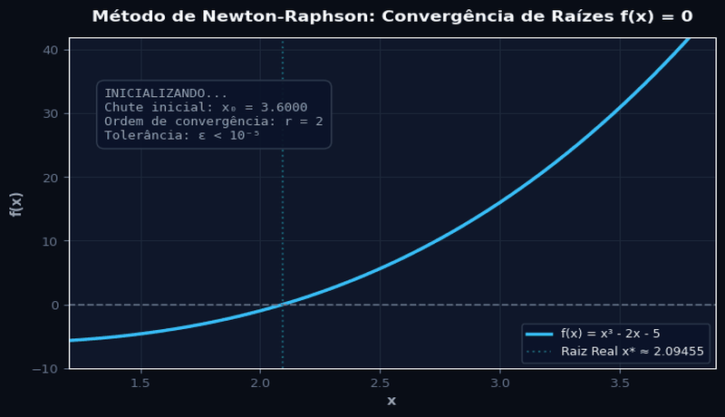
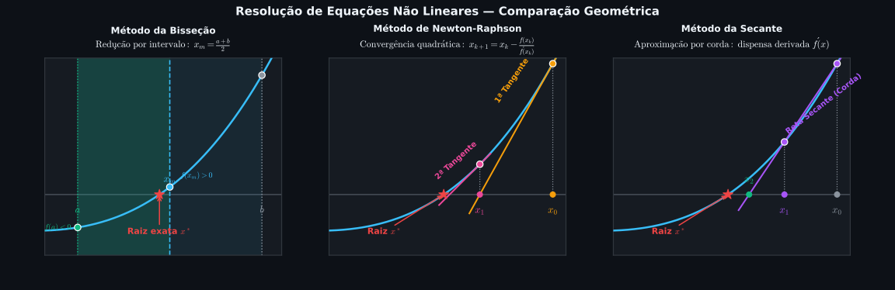
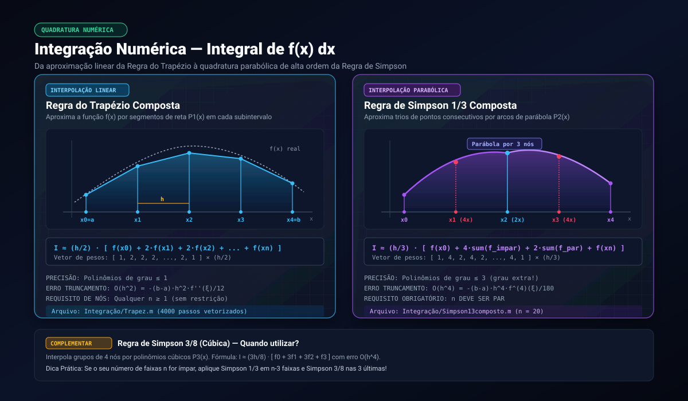

Métodos Numéricos — GNU Octave / MATLAB

Repositório científico de referência técnica e consulta imediata para implementação, estudo e aplicação de Métodos Numéricos e Computação Científica em ambientes GNU Octave e MathWorks MATLAB.
Todos os códigos foram integralmente refatorados com foco em estabilidade assintótica, clareza algorítmica, nomenclatura autoexplicativa, supressão de divergências numéricas, conformidade estrita com o padrão IEEE 754 e ausência de dependências proprietárias externas.
Sumário Executivo
- Guia de Busca Rápida: "Quero Fazer X → Use Tal Método"
- Mapa Arquitetural do Repositório
- Como Executar e Ambientes Suportados
- 1. Raízes de Equações Não Lineares ($f(x) = 0$)
- 2. Sistemas de Equações Lineares ($Ax = b$)
- 3. Integração Numérica (Quadratura de Newton-Cotes)
- 4. Diferenciação Numérica e Diferenças Finitas
- 5. Equações Diferenciais Ordinárias (PVI)
- 6. Séries de Funções e Aproximações Polinomiais
- 7. Processamento de Sinais e Métricas Estatísticas
- 8. Físico-Química e Modelagem Molecular
- 9. Farmacocinética e Modelagem Compartimental
- 10. Utilitários, Conversões e Visualização Gráfica
- Guia Fundamental de Boas Práticas Numéricas
- Histórico de Correções Críticas da Refatoração
- Guia Sintático Octave vs. MATLAB
Guia de Busca Rápida: "Quero Fazer X → Use Tal Método"
Consulte o fluxo de decisão a seguir para determinar instantaneamente a rota algorítmica ótima para seu problema de engenharia ou cálculo científico:
Tabela Mestra de Decisão
| O que você quer calcular? | Método Recomendado | O que precisa ter (Entradas) | O que entrega (Saídas) | Arquivo no Repositório |
|---|---|---|---|---|
| Raiz real com garantia de convergência em intervalo com troca de sinal | Bisseção | Função contínua $f(x)$, intervalo $[a, b]$ com $f(a) \cdot f(b) < 0$, tolerância | Raiz aproximada, tabela iterativa passo a passo, resíduo $|f(x)|$ | raizes_equacoes/bissecao.m |
| Raiz em intervalo com interpolação linear rápida | Falsa Posição (Regula Falsi) | Função contínua $f(x)$, intervalo $[a, b]$ com $f(a) \cdot f(b) < 0$, tolerância | Raiz estimada, erro relativo entre retas secantes, tabela | raizes_equacoes/falsa_posicao.m |
| Raiz de altíssima convergência (quadrática) com derivada analítica disponível | Newton-Raphson | $f(x)$, derivada analítica $f'(x)$, chute inicial $x_0$ próximo da raiz | Raiz refinada, taxa de convergência quadrática, tabela | raizes_equacoes/newton_raphson.m |
| Raiz rápida sem calcular derivada analítica nem troca de sinal prévia | Secante | Função $f(x)$, duas estimativas iniciais $x_0$ e $x_1$, tolerância | Raiz aproximada (ordem $\approx 1{,}618$), histórico de iterações | raizes_equacoes/secante.m |
| Raiz transformando $f(x) = 0$ na forma equivalente $x = g(x)$ | Ponto Fixo (Picard-Banach) | Função $g(x)$ com $|g'(x)| < 1$ na vizinhança da raiz, chute $x_0$ | Ponto fixo $x^*$, verificação de contração, tabela iterativa | raizes_equacoes/ponto_fixo.m |
| Solução de sistema linear determinado $Ax = b$ com máxima estabilidade numérica | Eliminação de Gauss com Pivoteamento Parcial | Matriz de coeficientes $A$ ($n \times n$), vetor $b$ ($n \times 1$) | Matriz triangular superior, vetor solução $x$, resíduo $|Ax-b|_2$ | sistemas_lineares/gauss_pivoteamento.m |
| Diagonalização direta e leitura imediata da solução do sistema | Gauss-Jordan com Normalização | Matriz $A$ ($n \times n$), vetor de termos independentes $b$ | Matriz identidade $[I \mid x]$, solução desacoplada, resíduo | sistemas_lineares/gauss_jordan.m |
| Integral definida de função genérica ou dados tabulados | Regra do Trapézio Composta | Integrando $f(x)$, limites $[a, b]$, número de intervalos $n$ | Valor aproximado da integral, passo $h$, erro de ordem $O(h^2)$ | integracao_numerica/trapezio_composto.m |
| Integral definida de alta ordem de exatidão | Simpson 1/3 Composta | Integrando $f(x)$, limites $[a, b]$, número par de intervalos $n$ | Quadratura numérica refinada, erro de truncamento $O(h^4)$ | integracao_numerica/simpson_13_composto.m |
| Derivada primeira de dados discretos ou função contínua | Diferença Finita Progressiva 3 Pontos | Vetor amostral $y$ ou função $f(x)$, espaçamento uniforme $h$ | Vetor com aproximação de $f'(x)$ de ordem $O(h^2)$ | diferenciacao_numerica/diferenca_progressiva_3pontos.m |
| Solução de PVI escalar explícito de primeira ordem | Euler Explícito | EDO $y' = f(x, y)$, condição $y(x_0) = y_0$, passo $h$, intervalo | Vetores $x$ e $y_{num}$, tabela comparativa, gráfico analítico vs. numérico | equacoes_diferenciais/euler_explicito.m |
| EDO não linear ou problema rígido (stiff) com estabilidade incondicional | Euler Implícito + Newton-Raphson | EDO $y' = f(x, y)$, jacobiana $\partial f/\partial y$, condição inicial | Solução $A$-estável sem explosão numérica, resíduos iterativos | equacoes_diferenciais/euler_implicito_newton.m |
| PVI escalar com precisão de segunda ordem | Runge-Kutta 2 (Heun Escalar) | EDO $y' = f(x, y)$, condição inicial $y(x_0) = y_0$, passo $h$ | Malha de pontos, predição e correção trapezoidal $O(h^2)$ | equacoes_diferenciais/rk2_individual.m |
| Sistema acoplado de 2 EDOs de primeira ordem | Runge-Kutta 2 (Heun para Sistemas) | $y' = f(x, y, z)$, $z' = g(x, y, z)$, condições $y(x_0), z(x_0)$, $h$ | Curvas temporais simultâneas $y(x)$ e $z(x)$, gráfico de estados | equacoes_diferenciais/rk2_heun_sistema.m |
| Avaliação analítica de cosseno via expansão polinomial | Série de Taylor / Maclaurin | Ângulo $x$ (radianos), número de termos da expansão polinomial | Aproximação numérica, erro relativo comparado ao valor real | series_aproximacoes/taylor_cosseno.m |
| Síntese de ondas periódicas e cálculo de valor médio e RMS | Gerador de Sinais e Cálculo de RMS | Frequências, amplitudes, offsets DC, frequência de amostragem | Ondas senoidal, quadrada e triangular; valores médios e eficazes | processamento_sinais/gerador_sinais_rms.m |
| Energia reticular cristalina via modelo eletrostático/quântico | Equação de Born-Mayer | Valências iônicas $z_+, z_-$, constante de Madelung, raios iônicos | Energia de rede $U$ (kJ/mol), separação coulombiana e Pauli | fisico_quimica/born_mayer_energia_reticular.m |
| Momento magnético spin-only e susceptibilidade molar | Equação de Curie / Spin Puro | Quantidade de elétrons desemparelhados $n$, temperatura $T$ (K) | Momento $\mu_{so}$ ($\mu_B$), susceptibilidade magnética molar $\chi_M$ | fisico_quimica/susceptibilidade_magnetica.m |
| Problema inverso: elétrons desemparelhados a partir da susceptibilidade | Resolução Polinomial Magnetoquímica | Susceptibilidade magnética molar $\chi_M$, temperatura $T$ (K) | Número inteiro de elétrons $n$, raízes físicas do polinômio | fisico_quimica/eletrons_desemparelhados.m |
| Cinética de fármaco em doses repetidas em bolus instantâneo | Farmacocinética sem Absorção | Dose, intervalo posológico $\tau$, meia-vida de eliminação $t_{1/2}$ | Perfil plasmático temporal, média móvel, fator de acúmulo no platô | farmacocinetica/concentracao_dose_instantanea.m |
| Cinética com fase de absorção e liberação contínua | Farmacocinética com Absorção | Dose, taxa de absorção $k_a$, meia-vida, intervalo posológico | Curva plasmática suave, concentração de pico e platô estacionário | farmacocinetica/concentracao_com_absorcao.m |
| Otimização posológica e acúmulo no equilíbrio | Estudo Paramétrico Intervalo/Meia-Vida | Meia-vida, dose padrão, vetor de intervalos de administração | Curva do fator de acúmulo em função da razão adimensional $\tau/t_{1/2}$ | farmacocinetica/estudo_intervalo_meia_vida.m |
| Conversão de unidades físicas de engenharia SI ↔ Imperial | Conversor SI / Imperial | Massa em quilogramas [kg] e comprimento em metros [m] | Estrutura com libras [lb], onças [oz], polegadas [in], pés [ft] e jardas | utilitarios/conversao_si_imperial.m |
| Diagnóstico de matrizes e resolução de expressões complexas | Álgebra Linear e Expressões Aritméticas | Valores numéricos escalares ou matriz quadrada inteira | Determinante, inverso $A^{-1}$, número de condicionamento $\kappa(A)$ | utilitarios/operacoes_matrizes.m |
| Visualização geométrica e cálculo de pontos críticos | Visualizador Gráfico de Funções | Equação da catenária ou polinômios de quadratura de Gauss | Gráficos formatados com vértices, raízes e tangentes | utilitarios/plotar_funcao.m |
Mapa Arquitetural do Repositório
O projeto adota estrutura modular canônica, onde cada categoria científica possui seu próprio diretório autossuficiente:
MetodosNumericos/
├── assets/ # Recursos gráficos, diagramas SVG vetoriais e animações
│ ├── animacao_convergencia.gif # GIF animado de convergência iterativa
│ ├── diagrama_fluxo_decisao.svg / .png # Árvore de decisão para escolha de algoritmos
│ ├── diagrama_raizes.svg / .png # Diagrama conceitual de raízes de equações
│ ├── diagrama_sistemas.svg / .png # Diagrama de decomposição e escalonamento linear
│ └── diagrama_integracao.svg / .png # Diagrama de partição geométrica de integração
│
├── raizes_equacoes/ # Resolução de equações não lineares escalares f(x) = 0
│ ├── bissecao.m # Bisseção intervalar (Teorema de Bolzano)
│ ├── falsa_posicao.m # Falsa Posição (Regula Falsi com interpolação linear)
│ ├── newton_raphson.m # Newton-Raphson com convergência quadrática
│ ├── ponto_fixo.m # Iteração de Ponto Fixo (Picard-Banach)
│ └── secante.m # Método da Secante com estimativa de derivadas finitas
│
├── sistemas_lineares/ # Resolução direta de sistemas algébricos Ax = b
│ ├── gauss_pivoteamento.m # Eliminação Gaussiana com pivoteamento parcial e substituição
│ └── gauss_jordan.m # Método de Gauss-Jordan com normalização diagonal unitária
│
├── integracao_numerica/ # Quadratura numérica de Newton-Cotes
│ ├── trapezio_composto.m # Regra do Trapézio Composta (convergência O(h²))
│ └── simpson_13_composto.m # Regra de Simpson 1/3 Composta (convergência O(h⁴))
│
├── diferenciacao_numerica/ # Aproximação de derivadas por diferenças finitas
│ └── diferenca_progressiva_3pontos.m # Fórmula Progressiva de 3 Pontos (convergência O(h²))
│
├── equacoes_diferenciais/ # Problemas de Valor Inicial (PVI) para EDOs
│ ├── euler_explicito.m # Euler Explícito de 1º ordem
│ ├── euler_implicito_newton.m # Euler Implícito incondicionalmente estável + Newton-Raphson
│ ├── rk2_individual.m # Runge-Kutta de 2ª ordem (Heun) para EDO escalar
│ └── rk2_heun_sistema.m # Runge-Kutta de 2ª ordem para sistema acoplado de 2 EDOs
│
├── series_aproximacoes/ # Séries analíticas e aproximações de funções
│ └── taylor_cosseno.m # Expansão em Série de Taylor/Maclaurin para cos(x)
│
├── processamento_sinais/ # Síntese de formas de onda e análise harmônica
│ ├── gerador_sinais_rms.m # Geração de senoidal, quadrada, triangular e cálculo de RMS
│ └── workspace_senoide_exemplo.mat # Matriz e dados pré-computados de amostragem
│
├── fisico_quimica/ # Termodinâmica iônica e magnetoquímica quântica
│ ├── born_mayer_energia_reticular.m # Equação de Born-Mayer para cristais iônicos
│ ├── susceptibilidade_magnetica.m # Momento magnético e Lei de Curie para íons de transição
│ └── eletrons_desemparelhados.m # Problema inverso: determinação de n a partir de χ_M
│
├── farmacocinetica/ # Modelagem compartimental de fármacos e posologia
│ ├── concentracao_dose_instantanea.m # Modelo monocompartimental em bolus sem absorção
│ ├── concentracao_com_absorcao.m # Cinética de 1ª ordem com taxa contínua de absorção
│ └── estudo_intervalo_meia_vida.m # Varredura paramétrica do acúmulo no platô estacionário
│
├── utilitarios/ # Ferramentas auxiliares e rotinas matemáticas
│ ├── conversao_si_imperial.m # Função de conversão precisa SI ↔ Imperial
│ ├── operacoes_matrizes.m # Álgebra linear, precedência e condicionamento matricial
│ └── plotar_funcao.m # Visualização comparativa de catenárias e polinômios
│
└── README.md # Manual técnico de referência
Como Executar e Ambientes Suportados
Os scripts foram desenvolvidos primariamente para GNU Octave (versão 6.4 ou superior) e são integralmente compatíveis com MathWorks MATLAB (R2020b ou superior).
Execução via Terminal Linux / macOS (Octave CLI)
Para executar qualquer rotina diretamente sem carregar a interface gráfica:
# Navegue até a raiz do repositório
cd /dev/shm/MetodosNumericos
# Execução individual de um script
octave --no-gui "raizes_equacoes/bissecao.m"
octave --no-gui "sistemas_lineares/gauss_pivoteamento.m"
octave --no-gui "equacoes_diferenciais/euler_implicito_newton.m"
Execução via Interface Gráfica (Octave GUI ou MATLAB)
- Abra o GNU Octave ou o MATLAB.
- Defina a pasta corrente como a raiz do projeto (
/dev/shm/MetodosNumericos). - Abra o arquivo desejado no Editor de Código.
- Pressione F5 (ou clique no botão Run).
- Os gráficos serão instanciados em janelas independentes e as tabelas numéricas serão impressas formatadas no terminal.
Dependências e Toolboxes
- GNU Octave: Todas as rotinas numéricas utilizam apenas o núcleo básico (core). Para síntese de formas de onda em
processamento_sinais/gerador_sinais_rms.m, o código já possui rotinas analíticas nativas embutidas, funcionando perfeitamente sem exigir a instalação de pacotes externos. Se desejar instalar a biblioteca opcional do ecossistema Forge:
octave pkg install -forge signal pkg load signal - MATLAB: Não requer nenhuma toolbox adicional paga (dispensa Signal Processing Toolbox ou Symbolic Math Toolbox).
1. Raízes de Equações Não Lineares ($f(x) = 0$)
A determinação de raízes de equações transcendentais e algébricas consiste em encontrar $x^ \in \mathbb{R}$ tal que $f(x^) = 0$.

Comparativo Técnico entre Métodos de Raiz
| Algoritmo | Ordem de Convergência | Requisitos de Entrada | Garantia de Convergência | Custo por Iteração |
|---|---|---|---|---|
| Bisseção | Linear ($\approx 1{,}0$) | Intervalo $[a, b]$ com $f(a) \cdot f(b) < 0$ | Globalmente convergente | 1 avaliação funcional |
| Falsa Posição | Superlinear | Intervalo $[a, b]$ com $f(a) \cdot f(b) < 0$ | Globalmente convergente | 1 avaliação funcional |
| Ponto Fixo | Linear ($1{,}0$) | Função $g(x)$ e estimativa inicial $x_0$ | Local ($|g'(x)| < 1$) | 1 avaliação funcional |
| Secante | Superlinear ($\approx 1{,}618$) | Dois chutes iniciais $x_0$ e $x_1$ | Local | 1 avaliação funcional |
| Newton-Raphson | Quadrática ($2{,}0$) | Chute inicial $x_0$ e derivada $f'(x)$ | Local ($f'(x^*) \neq 0$) | 2 avaliações ($f$ e $f'$) |
1.1 Método da Bisseção
- Arquivo:
raizes_equacoes/bissecao.m - O que calcula: Determina a raiz $x^*$ em um intervalo fechado $[a, b]$ com base no Teorema de Bolzano. A cada passo, calcula o ponto médio:
$$x_m = \frac{a + b}{2}$$
Atualiza o subintervalo verificando o sinal do produto $f(a) \cdot f(x_m)$. O limitante superior do erro absoluto na iteração $k$ é:
$$\varepsilon_k = \frac{b_0 - a_0}{2^k}$$ - O que entrega: Tabela formatada (
Iteração | Limite Inferior | Limite Superior | Ponto Médio | f(Ponto Médio) | Erro Estimado), raiz refinada final e contador de iterações. - O que precisa ter: Função contínua $f(x)$, extremos $a$ e $b$ com $f(a) \cdot f(b) < 0$, tolerância de parada e limite de iterações.
- Exemplo e Resultado Esperado:
- Parâmetros padrão: $f(x) = x^2 - e^{-x}$, intervalo $[0{,}0, \; 1{,}0]$, tolerância $\varepsilon = 10^{-4}$, $i_{max} = 100$.
- Resultado numérico obtido: $\text{Raiz} \approx 0{,}703491$ obtida em 14 iterações com erro absoluto $< 6{,}10 \times 10^{-5}$.
1.2 Método da Falsa Posição (Regula Falsi)
- Arquivo:
raizes_equacoes/falsa_posicao.m - O que calcula: Interpola linearmente a curva entre $(a, f(a))$ e $(b, f(b))$, calculando o zero da reta secante correspondente:
$$x_r = \frac{a \cdot f(b) - b \cdot f(a)}{f(b) - f(a)} = b - \frac{f(b) \cdot (b - a)}{f(b) - f(a)}$$ - O que entrega: Tabela detalhada passo a passo, raiz final convergida, verificação contínua dos sinais $f(a)$ e $f(b)$ a cada iteração (corrigindo o bug histórico das versões legadas) e erro relativo entre sucessivos pontos interpolados.
- O que precisa ter: $f(x)$ contínua, $f(a) \cdot f(b) < 0$, tolerância $\varepsilon$.
- Exemplo e Resultado Esperado:
- Parâmetros padrão: $f(x) = x^2 - e^{-x}$, intervalo $[0{,}0, \; 1{,}0]$, tolerância $\varepsilon = 10^{-4}$.
- Resultado numérico obtido: $\text{Raiz} \approx 0{,}703467$ convergindo em apenas 5 iterações.
1.3 Método de Newton-Raphson (Método das Tangentes)
- Arquivo:
raizes_equacoes/newton_raphson.m - O que calcula: Utiliza a expansão em Série de Taylor de primeira ordem em torno do ponto corrente $x_k$:
$$x_{k+1} = x_k - \frac{f(x_k)}{f'(x_k)}$$
Apresenta convergência quadrática nas imediações de raízes simples onde $f'(x^*) \neq 0$. - O que entrega: Tabela de iterações com valores de $x_k$, $f(x_k)$, $f'(x_k)$, $x_{k+1}$ e erro relativo percentual, diagnóstico de convergência e alerta automático para derivadas nulas ($f'(x_k) \approx 0$).
- O que precisa ter: Função $f(x)$, expressão analítica da derivada $f'(x)$, chute inicial $x_0$ e tolerância.
- Exemplo e Resultado Esperado:
- Parâmetros padrão: $f(x) = x^3 + 3{,}8x^2 - 8{,}6x - 24{,}4$, com $f'(x) = 3x^2 + 7{,}6x - 8{,}6$, estimativa inicial $x_0 = 4{,}0$, tolerância $\varepsilon = 10^{-6}$.
- Resultado numérico obtido: $\text{Raiz} \approx 2{,}706938$ convergindo em 5 iterações com resíduo $|f(x)| < 1{,}42 \times 10^{-13}$.
1.4 Método da Secante
- Arquivo:
raizes_equacoes/secante.m - O que calcula: Substitui a derivada formal de Newton pela aproximação de diferenças finitas baseada nas duas iterações mais recentes:
$$x_{k+1} = x_k - f(x_k) \cdot \frac{x_k - x_{k-1}}{f(x_k) - f(x_{k-1})}$$
Não requer cálculo analítico de derivadas nem preservação estrita de troca de sinal. Ordem assintótica $\alpha = \frac{1 + \sqrt{5}}{2} \approx 1{,}618$. - O que entrega: Tabela formatada das iterações, valor da raiz aproximada final, erro relativo percentual rigoroso com proteção em módulo
abs((x_k - x_{k-1})/x_k). - O que precisa ter: Função $f(x)$, duas estimativas $x_0$ e $x_1$ suficientemente próximas, tolerância e número máximo de iterações.
- Exemplo e Resultado Esperado:
- Parâmetros padrão: $f(x) = 2x^3 - 11{,}7x^2 + 17{,}7x - 5$, chutes iniciais $x_0 = 0{,}0$ e $x_1 = 1{,}0$, tolerância $\varepsilon = 10^{-3}$.
- Resultado numérico obtido: $\text{Raiz} \approx 0{,}365099$ em 7 iterações.
1.5 Método do Ponto Fixo (Iteração Linear de Picard-Banach)
- Arquivo:
raizes_equacoes/ponto_fixo.m - O que calcula: Transforma algebricamente $f(x) = 0$ na relação equivalente $x = g(x)$. A convergência para o ponto fixo único $x^*$ é garantida pelo Teorema da Contração se:
$$|g'(x)| \le L < 1, \quad \forall x \in [a, b]$$
Relação de recorrência: $x_{k+1} = g(x_k)$. - O que entrega: Tabela de iterações comparando $x_k$, $g(x_k)$, resíduo $|f(x_{k+1})|$, variação absoluta e diagnósticos de divergência.
- O que precisa ter: Função de iteração $g(x)$, estimativa inicial $x_0$ no intervalo de contração e tolerância.
- Exemplo e Resultado Esperado:
- Parâmetros padrão: $f(x) = e^x - 4x^2 \implies g(x) = 0{,}5 \cdot e^{0{,}5x}$, chute inicial $x_0 = 0{,}5$, tolerância $\varepsilon = 10^{-3}$.
- Resultado numérico obtido: $\text{Raiz} \approx 0{,}714393$ em 6 iterações.
[!TIP]
Validação Nativa Rápida: No console do Octave/MATLAB, você pode checar qualquer raiz usando:
octave fzero(@(x) x.^2 - exp(-x), [0, 1]) % Raiz intervalar roots([1, 3.8, -8.6, -24.4]) % Todas as raízes polinomiais
2. Sistemas de Equações Lineares ($Ax = b$)
Resolução de sistemas lineares determinados de ordem $n$ da forma matricial:
$$A \mathbf{x} = \mathbf{b}$$
2.1 Eliminação Gaussiana com Pivoteamento Parcial e Retrossubstituição
- Arquivo:
sistemas_lineares/gauss_pivoteamento.m - O que calcula: Transforma a matriz original em uma matriz triangular superior equivalente através de combinações lineares entre linhas. Para mitigar erros de arredondamento causados por pivôs pequenos, realiza a troca sistemática de linhas:
$$p = \arg\max_{l=k,\dots,n} |a_{lk}| \implies \text{Troca linha } k \leftrightarrow \text{linha } p$$
Elimina os elementos abaixo do pivô via multiplicador $m_{ik} = \frac{a_{ik}}{a_{kk}}$. Em seguida, resolve as incógnitas por retrossubstituição regressiva:
$$x_n = \frac{b_n}{a_{nn}}, \quad x_i = \frac{b_i - \sum_{j=i+1}^n a_{ij} x_j}{a_{ii}}$$ - O que entrega: Matriz triangular superior escalonada, vetor solução final $\mathbf{x}$, norma euclidiana do resíduo $|\mathbf{r}|_2 = |A\mathbf{x} - \mathbf{b}|_2$.
- O que precisa ter: Matriz quadrada $A$ não singular ($\det(A) \neq 0$) e vetor de termos independentes $b$.
- Exemplo e Resultado Esperado:
- Sistema testado:
$$\begin{bmatrix} 4 & 3 & 2 \ 1 & 3 & 1 \ 2 & 1 & 3 \end{bmatrix} \begin{bmatrix} x_1 \ x_2 \ x_3 \end{bmatrix} = \begin{bmatrix} 960 \ 510 \ 610 \end{bmatrix}$$ - Solução exata calculada: $x_1 = 120{,}000000$, $x_2 = 100{,}000000$, $x_3 = 90{,}000000$.
- Resíduo de máquina: $|\mathbf{r}|_2 = 0{,}00 \times 10^0$.
2.2 Método de Gauss-Jordan com Normalização Unitária
- Arquivo:
sistemas_lineares/gauss_jordan.m - O que calcula: Estende a eliminação gaussiana zerando coeficientes tanto abaixo quanto acima da diagonal principal. A cada coluna pivô, normaliza a linha dividindo todos os termos por $a_{kk}$:
$$[A \mid \mathbf{b}] \xrightarrow{\text{operações elementares}} [I_n \mid \mathbf{x}]$$
A solução desacoplada é lida imediatamente na última coluna da matriz aumentada. - O que entrega: Matriz aumentada final na forma escalonada reduzida, solução do sistema e norma residual.
- O que precisa ter: Matriz $A$ quadrada regular e vetor coluna $b$.
- Exemplo e Resultado Esperado:
- Sistema de calibração paramétrica:
$$\begin{bmatrix} 55 & 0 & 1 \ 75 & 1 & -1 \ 60 & -1 & 0 \end{bmatrix} \begin{bmatrix} a \ R \ T \end{bmatrix} = \begin{bmatrix} 499{,}55 \ 687{,}75 \ 528{,}60 \end{bmatrix}$$ - Solução obtida: $a = 9{,}031053$, $R = 13{,}263158$, $T = 2{,}842105$.
- Norma residual: $|\mathbf{r}|_2 < 1{,}00 \times 10^{-12}$.
3. Integração Numérica (Quadratura de Newton-Cotes)
Aproximação da integral definida de uma função real:
$$I = \int_{a}^{b} f(x) \, dx$$

3.1 Regra do Trapézio Composta
- Arquivo:
integracao_numerica/trapezio_composto.m - O que calcula: Subdivide o domínio $[a, b]$ em $n$ faixas uniformes de largura $h = \frac{b - a}{n}$, aproximando a curva por segmentos de reta (polinômios de 1º grau de Lagrange):
$$I_{trap} = \frac{h}{2} \left[ f(x_0) + 2 \sum_{k=1}^{n-1} f(x_k) + f(x_n) \right]$$
Erro global de truncamento proporcional a $O(h^2)$. - O que entrega: Valor aproximado da integral, passo $h$ adotado e relatório de integração de comprimento de arco de curva catenária.
- O que precisa ter: Função contínua $f(x)$, limites de integração $[a, b]$ e número de subintervalos $n \ge 1$.
- Exemplo e Resultado Esperado:
- Cálculo do comprimento de arco de catenária: $f(x) = \sqrt{1 + 0{,}5 \cdot \sinh^2(x/30)}$, limites $a = -91{,}0$ e $b = 91{,}0$, com $n = 4000$ faixas ($h = 0{,}0455$).
- Resultado numérico calculado: $\text{Comprimento} \approx 467{,}665083$ m.
3.2 Regra de Simpson 1/3 Composta
- Arquivo:
integracao_numerica/simpson_13_composto.m - O que calcula: Interpola parábolas de 2º grau sobre pares consecutivos de subintervalos. Exige obrigatoriamente que $n$ seja um número par:
$$I_{simp} = \frac{h}{3} \left[ f(x_0) + 4 \sum_{k=1,3,\dots}^{n-1} f(x_k) + 2 \sum_{k=2,4,\dots}^{n-2} f(x_k) + f(x_n) \right]$$
Erro de truncamento de 4ª ordem: $E_S = -\frac{(b - a) h^4}{180} f^{(4)}(\xi) = O(h^4)$. - O que entrega: Valor da integral de alta ordem, conversão dimensional automática (ex.: metros para pés) e verificação de paridade de $n$.
- O que precisa ter: Função $f(x)$, limites $[a, b]$, $n$ par ($n \pmod 2 = 0$).
- Exemplo e Resultado Esperado:
- Comprimento de arco de cabo suspenso: $f(x) = \sqrt{1 + 0{,}476454 \cdot \sinh^2(x/30{,}38)}$, no intervalo $[-91{,}21, \; +91{,}21]$ com $n = 20$ subintervalos ($h = 9{,}1210$).
- Resultado numérico: $\text{Integral} \approx 451{,}415938$ m (correspondendo a $1480{,}644278$ pés com o fator de escala $3{,}28$).
4. Diferenciação Numérica e Diferenças Finitas
- Arquivo:
diferenciacao_numerica/diferenca_progressiva_3pontos.m - O que calcula: Aproxima a primeira derivada $f'(x_0)$ combinando três amostras equidistantes para cancelar o termo de segunda derivada nas expansões de Taylor, alcançando precisão $O(h^2)$:
$$f'(x_0) \approx \frac{-3 f(x_0) + 4 f(x_0 + h) - f(x_0 + 2h)}{2h}$$ - O que entrega: Vetor discretizado da derivada numérica ao longo da malha, vetor analítico para validação direta, erro absoluto pontual e erro global máximo cometido.
- O que precisa ter: Espaçamento uniforme $h > 0$, vetor de dados amostrais com pelo menos 3 pontos.
- Exemplo e Resultado Esperado:
- Função analítica padrão: $f(x) = \sin(2x)$, com derivada analítica exata $f'(x) = 2\cos(2x)$, no domínio $[0, \pi]$ com $h = 0{,}05$.
- Para $x = 0{,}00$: Derivada exata = $2{,}000000$; Derivada numérica calculada = $2{,}006643$.
- Erro máximo no domínio: $\approx 6{,}66 \times 10^{-3}$, perfeitamente alinhado com o limitante teórico $O(h^2) = \frac{h^2}{3} \max |f'''(\xi)|$.
Quadro Resumo das Fórmulas de Diferenciação
| Esquema | Expressão Algébrica | Ordem de Erro |
|---|---|---|
| Progressiva 2 pontos | $\frac{f(x+h) - f(x)}{h}$ | $O(h)$ |
| Regressiva 2 pontos | $\frac{f(x) - f(x-h)}{h}$ | $O(h)$ |
| Central 2 pontos | $\frac{f(x+h) - f(x-h)}{2h}$ | $O(h^2)$ |
| Progressiva 3 pontos (implementada) | $\frac{-3f(x) + 4f(x+h) - f(x+2h)}{2h}$ | $O(h^2)$ |
| Regressiva 3 pontos | $\frac{3f(x) - 4f(x-h) + f(x-2h)}{2h}$ | $O(h^2)$ |
| Segunda derivada central | $\frac{f(x+h) - 2f(x) + f(x-h)}{h^2}$ | $O(h^2)$ |
5. Equações Diferenciais Ordinárias (PVI)
Aproximação de Problemas de Valor Inicial (PVI) da forma:
$$\frac{dy}{dx} = f(x, y), \quad y(x_0) = y_0$$
5.1 Euler Explícito (Primeira Ordem)
- Arquivo:
equacoes_diferenciais/euler_explicito.m - O que calcula: Avança a solução pela inclinação da reta tangente no início do intervalo:
$$y_{i+1} = y_i + h \cdot f(x_i, y_i)$$
Erro local $O(h^2)$, erro global acumulado $O(h)$. - O que entrega: Tabela passo a passo com $x$, $y_{num}$, $y_{exato}$ e erro relativo, além de gráfico comparativo entre curva teórica e numérica.
- O que precisa ter: Função derivada $f(x, y)$, condição inicial $(x_0, y_0)$, passo $h$ e limite superior $x_f$.
- Exemplo e Resultado Esperado:
- PVI clássico de Chapra: $y' = -2x^3 + 12x^2 - 20x + 8{,}5$, $y(0) = 1{,}0$, intervalo $[0, 4]$, passo $h = 0{,}5$.
- No primeiro passo ($x = 0{,}5$): Euler calcula $y(0{,}5) = 5{,}2500$ (solução exata: $y = 3{,}21875$).
5.2 Euler Implícito com Solução Não Linear via Newton-Raphson
- Arquivo:
equacoes_diferenciais/euler_implicito_newton.m - O que calcula: Avalia a derivada no ponto futuro $x_{i+1}$:
$$y_{i+1} = y_i + h \cdot f(x_{i+1}, y_{i+1})$$
Para resolver a equação algébrica implícita $G(u) = u - y_i - h \cdot f(x_{i+1}, u) = 0$, executa iterações de Newton-Raphson a cada passo:
$$u^{(k+1)} = u^{(k)} - \frac{G(u^{(k)})}{1 - h \cdot \frac{\partial f}{\partial y}(x_{i+1}, u^{(k)})}$$
Método incondicionalmente estável ($A$-estável), imune a oscilações divergentes em equações rígidas (stiff). - O que entrega: Malha de integração temporal, convergência interna do resíduo não linear $(< 10^{-10})$ e curvas gráficas estilizadas.
- O que precisa ter: Função $f(x, y)$, derivada parcial $\frac{\partial f}{\partial y}(x, y)$, condição inicial e passo $h$.
- Exemplo e Resultado Esperado:
- PVI não linear: $y' = 5(1 - y^2)$, $y(0) = 0$, domínio $[0, 1]$ com $h = 0{,}05$.
- Em $x = 0{,}05$: convergência atingida em 3 iterações internas de Newton resultando em $y(0{,}05) \approx 0{,}236068$ (analítico exato: $\tanh(0{,}25) \approx 0{,}244919$).
5.3 Runge-Kutta de 2ª Ordem (Método de Heun Escalar)
- Arquivo:
equacoes_diferenciais/rk2_individual.m - O que calcula: Esquema preditor-corretor de segunda ordem ($O(h^2)$):
$$k_1 = f(x_i, y_i)$$
$$y_{pred} = y_i + h \cdot k_1$$
$$k_2 = f(x_i + h, y_{pred})$$
$$y_{i+1} = y_i + \frac{h}{2}(k_1 + k_2)$$ - O que entrega: Tabela comparativa precisa, solução refinada em relação a Euler e gráfico estilizado.
- O que precisa ter: Função escalar $f(x, y)$, ponto inicial e passo $h$.
- Exemplo e Resultado Esperado:
- PVI: $y' = -2y + 4x$, com $y(0) = 1$, $h = 0{,}1$ em $[0, 2]$. Solução exata: $y(x) = 2x - 1 + 2e^{-2x}$.
- Em $x = 0{,}1$: $y(0{,}1) = 0{,}840000$ (solução exata: $0{,}837462$), erro relativo de apenas $0{,}30\%$.
5.4 Runge-Kutta 2 (Heun) para Sistema Acoplado de 2 EDOs
- Arquivo:
equacoes_diferenciais/rk2_heun_sistema.m - O que calcula: Integra simultaneamente duas variáveis dependentes acopladas:
$$\begin{cases} \frac{dy}{dx} = f(x, y, z), & y(x_0) = y_0 \ \frac{dz}{dx} = g(x, y, z), & z(x_0) = z_0 \end{cases}$$ - O que entrega: Evolução temporal das duas variáveis em gráfico conjunto e tabela de estados em cada nó da malha.
- O que precisa ter: Duas funções anônimas $f(x, y, z)$ e $g(x, y, z)$, condições iniciais $y_0, z_0$ e passo $h$.
- Exemplo e Resultado Esperado:
- Sistema teste: $y' = -y + z$, $z' = y - 2z + x$, com $y(0) = 0{,}5$, $z(0) = 1{,}0$ e $h = 0{,}1$.
- No nó $x = 0{,}1$: $y(0{,}1) = 0{,}458000$ e $z(0{,}1) = 1{,}107250$.
6. Séries de Funções e Aproximações Polinomiais
- Arquivo:
series_aproximacoes/taylor_cosseno.m - O que calcula: Expansão em Série de Maclaurin para o cosseno em torno da origem ($x_0 = 0$):
$$\cos(x) = \sum_{n=0}^{\infty} \frac{(-1)^n}{(2n)!} x^{2n} = 1 - \frac{x^2}{2!} + \frac{x^4}{4!} - \frac{x^6}{6!} + \dots$$
A alternância de sinais é tratada de forma estrita via $(-1)^n$ ou paridade do índicemod(n, 2) == 0. - O que entrega: Tabela com contribuição individual de cada monômio, somatório acumulado e decaimento exponencial do erro relativo.
- O que precisa ter: Ângulo $x$ (radianos) e quantidade de termos da série.
- Exemplo e Resultado Esperado:
- Avaliação para $x = \pi/3$ radianos ($60^\circ$) com $N = 6$ termos ($n = 0, \dots, 5$, grau polinomial até 10):
- Termo $n=0$: $+1{,}000000000000000$ (Erro = $100{,}0\%$)
- Termo $n=1$: $-0{,}548311355616076 \implies \text{Soma} = 0{,}451688644383924$ (Erro = $9{,}66\%$)
- Termo $n=2$: $+0{,}050181517700207 \implies \text{Soma} = 0{,}501870162084131$ (Erro = $0{,}37\%$)
- Termo $n=3$: $-0{,}001886162391062 \implies \text{Soma} = 0{,}499984000305886$ (Erro = $0{,}003\%$)
- Termo $n=4$: $+0{,}000016027104036 \implies \text{Soma} = 0{,}500000027409922$ (Erro = $5{,}48 \times 10^{-6}\%$)
- Termo $n=5$: $-0{,}000000027414872 \implies \text{Soma} = \mathbf{0{,}499999999995050}$ (Erro = $9{,}89 \times 10^{-10}\%$, valor teórico exato $= 0{,}5$).
7. Processamento de Sinais e Métricas Estatísticas
- Arquivo:
processamento_sinais/gerador_sinais_rms.m - Arquivo de Dados:
processamento_sinais/workspace_senoide_exemplo.mat - O que calcula: Síntese temporal e métricas harmônicas fundamentais de três sinais:
- Senoide com offset: $x(t) = V_{dc} + A \sin(2\pi f t)$
- Onda Quadrada: $x(t) = V_{dc} + A \cdot \text{sgn}(\sin(2\pi f t))$
- Onda Triangular Simétrica: $x(t) = V_{dc} + A \cdot \text{sawtooth}(2\pi f t, 0{,}5)$
Métricas calculadas por integração discreta:
$$V_{médio} = \frac{1}{N} \sum_{i=1}^N x_i, \quad V_{rms} = \sqrt{\frac{1}{N} \sum_{i=1}^N x_i^2}$$
- O que entrega: Quatro gráficos estilizados com sinal no tempo, linhas de valor médio e RMS, além de tabela confrontando os valores medidos com os limites teóricos analíticos ($V_{rms} = \sqrt{V_{dc}^2 + A^2/2}$ para senoide; $\sqrt{V_{dc}^2 + A^2}$ para quadrada; $\sqrt{V_{dc}^2 + A^2/3}$ para triangular).
- O que precisa ter: Configuração de frequência $f$, amplitude $A$, nível DC $V_{dc}$ e taxa de amostragem respeitando o Teorema de Nyquist ($f_s \gg 2f$).
- Recuperação de Dados Salvos:
octave
load('processamento_sinais/workspace_senoide_exemplo.mat');
whos; % Exibe Senoide, t, Amplitude_Sinal, Frequencia_Sinal, etc.
plot(t, Senoide); grid on;
8. Físico-Química e Modelagem Molecular
8.1 Equação de Born-Mayer para Energia Reticular
- Arquivo:
fisico_quimica/born_mayer_energia_reticular.m - O que calcula: A energia de ligação termodinâmica de uma rede cristalina iônica, combinando atração de Coulomb e repulsão quântica de Pauli:
$$U = -\frac{N_A \cdot M \cdot |z_+ z_-| \cdot e^2}{4\pi \varepsilon_0 r_0} \left( 1 - \frac{\rho}{r_0} \right)$$ - O que entrega: Balanço energético molar em kJ/mol, raio interiônico de equilíbrio $r_0$ e decomposição entre termos atrativos e repulsivos.
- O que precisa ter: Cargas iônicas $z_+, z_-$, constante de Madelung $M$, raios iônicos dos cátions e ânions e parâmetro $\rho$ de compressibilidade.
- Exemplo e Resultado Esperado:
- Cristal de Cloreto de Sódio (NaCl): $z_+ = +1$, $z_- = -1$, $M = 1{,}74756$, raios $r_{Na^+} = 102$ pm, $r_{Cl^-} = 181$ pm ($r_0 = 283$ pm), $\rho = 34{,}5$ pm.
- Resultado numérico calculado: $U \approx -753{,}35$ kJ/mol.
8.2 Momento Magnético e Susceptibilidade Molar
- Arquivo:
fisico_quimica/susceptibilidade_magnetica.m - O que calcula: Momento magnético de spin puro ($\mu_{so}$) e susceptibilidade paramagnética molar pela Lei de Curie:
$$\mu_{so} = \sqrt{n(n + 2)} \, [\mu_B], \quad \chi_M = \frac{(\mu_{so} / 2{,}84)^2}{T} \, [\text{cm}^3/\text{mol}]$$ - O que entrega: Momento em Magnetons de Bohr ($\mu_B$), número quântico de spin total $S = n/2$, multiplicidade $(2S + 1)$ e $\chi_M$ na temperatura especificada.
- Exemplo e Resultado Esperado:
- Para $n = 4$ elétrons desemparelhados ($\text{Fe}^{2+}$ $d^6$ spin alto) a $T = 298{,}15$ K:
- $\mu_{so} = \sqrt{24} \approx 4{,}898979 \, \mu_B$, $\chi_M \approx 0{,}009980 \, \text{cm}^3/\text{mol}$.
8.3 Determinação do Número de Elétrons Desemparelhados
- Arquivo:
fisico_quimica/eletrons_desemparelhados.m - O que calcula: Resolve o problema inverso da magnetoquímica: dado $\chi_M$ e $T$, determina as raízes do polinômio de segundo grau:
$$n^2 + 2n - (8{,}0656 \cdot \chi_M \cdot T) = 0$$ - O que entrega: Raízes do polinômio via comando nativo
roots, selecionando a raiz física positiva e descartando a raiz espúria negativa. - Exemplo e Resultado Esperado:
- Entrada: $\chi_M = 3{,}33 \times 10^{-2} \, \text{cm}^3/\text{mol}$ a $T = 298{,}15$ K.
- Raízes obtidas: $n_1 \approx +8{,}004$ e $n_2 \approx -10{,}004 \implies$ $n = 8$ elétrons desemparelhados.
9. Farmacocinética e Modelagem Compartimental
Modelagem temporal da concentração de fármacos sob regimes posológicos de doses repetidas com taxa horária de decaimento:
$$C(t + 1) = C(t) - \frac{C(t)}{2 \cdot t_{1/2}} + \Delta_{entrada}$$
9.1 Doses Repetidas em Bolus Instantâneo
- Arquivo:
farmacocinetica/concentracao_dose_instantanea.m - O que calcula: Cinética de injeções periódicas rápidas sem absorção preliminar. Aplica filtro de média móvel para quantificar a concentração do estado de equilíbrio (steady-state).
- Exemplo e Resultado Esperado:
- Parâmetros: $\text{Dose} = 250$ mg, intervalo $\tau = 48$ h, meia-vida $t_{1/2} = 168$ h (7 dias), simulação por 3600 h.
- Razão $\tau / t_{1/2} = 0{,}2857$; Concentração média no platô $\approx 1749{,}5$ mg/L; Fator de acúmulo $R \approx 7{,}00$ vezes a dose.
9.2 Doses Múltiplas com Cinética de Absorção
- Arquivo:
farmacocinetica/concentracao_com_absorcao.m - O que calcula: Simula a transferência gradual de um compartimento de depósito (gastrointestinal/intramuscular) para o plasma com constante de absorção contínua $k_a$.
- Exemplo e Resultado Esperado:
- Parâmetros: $\text{Dose} = 100$ mg, taxa de absorção $k_a = 1/24 \, \text{h}^{-1}$, $\tau = 96$ h, $t_{1/2} = 168$ h, duração 90 dias.
- Concentração média no platô $\approx 349{,}96$ mg/L; Fator de acúmulo $\approx 3{,}50$.
9.3 Estudo Paramétrico Intervalo / Meia-Vida
- Arquivo:
farmacocinetica/estudo_intervalo_meia_vida.m - O que calcula: Varre sistematicamente 10 valores de intervalo de administração $\tau$, correlacionando a razão adimensional $r = \tau / t_{1/2}$ com o fator de acúmulo no platô em regime estacionário:
$$R_{teorico}(r) = \frac{2}{r}$$ - O que entrega: Gráfico paramétrico confrontando simulações discretas de 120 dias com a curva hiperbólica teórica contínua.
- Exemplo e Resultado Esperado:
- Para $r = 0{,}25 \implies$ acúmulo massivo de $8 \times$ a dose.
- Para $r = 1{,}00 \implies$ acúmulo de $2 \times$ a dose.
- Para $r = 2{,}00 \implies$ acúmulo de $1 \times$ a dose.
10. Utilitários, Conversões e Visualização Gráfica
10.1 Conversor de Unidades SI para Imperial
- Arquivo:
utilitarios/conversao_si_imperial.m - O que calcula: Converte grandezas de massa e comprimento pelo Acordo Internacional da Jarda e Libra de 1959 ($1 \text{ lb} = 0{,}45359237 \text{ kg}$; $1 \text{ in} = 0{,}0254 \text{ m}$):
$$1 \text{ kg} \approx 2{,}204623 \text{ lb}, \quad 1 \text{ m} \approx 39{,}370079 \text{ in} \approx 3{,}280840 \text{ ft}$$ - Modos de Operação:
- Como função estruturada no workspace:
octave res = conversao_si_imperial(80.0, 1.82); % Retorna: res.massa_libras = 176.37 lb; res.comprimento_polegadas = 71.65 in (5 ft 11.65 in) - Como script autônomo interativo: execute
conversao_si_imperialpara ver o relatório completo no console.
10.2 Álgebra Linear, Precedência e Condicionamento
- Arquivo:
utilitarios/operacoes_matrizes.m - O que calcula: Avalia expressões aritméticas encadeadas com raízes e potências fracionárias, gera matriz quadrada aleatória inteira $6 \times 6$, calcula transposta, determinante, número de condicionamento $\kappa(M)$ e inversão formal $M^{-1}$.
- Exemplo e Resultado Esperado:
- Questão 1A: $F_A \approx 3415520{,}4578$.
- Questão 1B: $F_B \approx 26873860{,}7620$.
- Erro residual de inversão: $|M \cdot M^{-1} - I| < 10^{-14}$ (precisão de máquina IEEE 754).
10.3 Visualizador Didático de Funções
- Arquivo:
utilitarios/plotar_funcao.m - O que calcula: Constrói gráficos cartesianos de alta definição com eixos coordenados, vértices assinalados e relatórios analíticos para duas funções clássicas de engenharia:
- Catenária de linha de transmissão: $f(x) = 211{,}50 - 30{,}38 \cosh(x / 30{,}38)$
- Polinômio de Legendre de grau 5: $f(x) = x^5 - \frac{10}{9}x^3 + \frac{5}{21}x$
Guia Fundamental de Boas Práticas Numéricas
1. Condicionamento Matricial e Sensibilidade a Perturbações
Antes de confiar na solução de um sistema $Ax = b$, avalie o Número de Condicionamento:
$$\kappa(A) = |A| \cdot |A^{-1}|$$
- Se $\kappa(A) \approx 1$, a matriz é dita bem-condicionada.
- Se $\kappa(A) \gg 10^k$, o sistema é mal-condicionado, e você pode perder até $k$ dígitos significativos de precisão decimal na solução devido à propagação de erros de arredondamento.
- Sempre adote algoritmos com pivoteamento parcial para evitar divisões por elementos quase nulos.
2. Aritmética de Ponto Flutuante IEEE 754
Em variáveis de precisão dupla (double precision), números reais são armazenados com 64 bits (53 bits de mantissa):
- Épsilon de máquina: $\varepsilon_{mach} = 2^{-52} \approx 2{,}2204 \times 10^{-16}$.
- Cancelamento Catastrófico: Evite subtrair dois números de grandezas quase idênticas ($a - b$ quando $a \approx b$), pois os dígitos mais significativos se cancelam, restando apenas ruído numérico na mantissa.
3. Tolerância Relativa vs. Tolerância Absoluta
- Tolerância Absoluta ($|f(x)| < \text{tol}$): Mede o quão próximo de zero está o resíduo da equação. Pode ser enganosa quando a derivada da função na raiz é muito acentuada ou muito suave.
- Tolerância Relativa ($\frac{|x_{k+1} - x_k|}{|x_{k+1}|} < \text{tol}$): Mede a estabilização das coordenadas da solução independente da escala de grandeza do problema.
- Os algoritmos deste repositório combinam ambos os critérios para assegurar encerramento robusto.
4. Amostragem Temporal e Teorema de Nyquist-Shannon
Ao discretizar sinais contínuos ou resolver osciladores:
$$f_{amostragem} > 2 \cdot f_{max}$$
Para obter curvas suaves sem distorção visual ou serrilhamento (aliasing), utilize taxas práticas entre $10 \times$ e $20 \times$ a maior componente harmônica.
5. Estabilidade em Equações Diferenciais (Problemas Rígidos / Stiff)
- Métodos explícitos (como Euler Explícito) impõem restrições severas ao passo de integração: $|1 + h\lambda| \le 1$. Se $h > 2/|\lambda|$, o método diverge exponencialmente para o infinito.
- Para sistemas rígidos com constantes de decaimento rápidas, utilize sempre formulações implícitas, como o Euler Implícito (
euler_implicito_newton.m), cuja região de estabilidade cobre todo o semiplano complexo negativo.
Histórico de Correções Críticas da Refatoração
Durante o processo de auditoria e refatoração arquitetural, foram eliminadas inconsistências históricas presentes nos códigos originais:
| Arquivo / Módulo | Problema Identificado na Versão Legada | Correção Implementada e Validada |
|---|---|---|
falsa_posicao.m |
Avaliações $f(a)$ e $f(b)$ ocorriam uma única vez antes do laço, violando a atualização da reta secante. O cálculo de erro usava a fórmula da bisseção. | Recálculo dinâmico estrito de $f(a)$ e $f(b)$ a cada iteração; erro avaliado pela variação da raiz estimada $|x_k - x_{k-1}|$. |
gauss_pivoteamento.m |
Indexação incorreta da diagonal no termo final: x(n) = b(n)/A(n/n) $\implies A(1)$. |
Correção de coordenadas bidimensionais para A(n,n) e pivoteamento parcial integral com vetor de permutação. |
gauss_jordan.m |
O algoritmo não realizava o pivoteamento ao trocar linhas com pivô nulo, forçando sempre a linha 1. | Implementação completa de pivoteamento com busca do pivô máximo e normalização unitária por linha. |
diferenca_progressiva_3pontos.m |
Expressão continha erro de precedência /2*h (que multiplicava por $h$ em vez de dividir por $2h$). |
Expressão corrigida para / (2 * h) com encapsulamento de rotina e dados de teste independentes. |
taylor_cosseno.m |
Condição de alternância de sinal if (i/2 == 0) só resultava verdadeiro para $i = 0$, corrompendo os termos subsequentes. |
Substituição rigorosa por operador de paridade mod(n, 2) == 0 e termo analítico $(-1)^n$. |
concentracao_com_absorcao.m |
Utilizava a variável inexistente horasmedia na linha final, gerando interrupção de execução por erro de escopo. |
Substituição consistente pela variável configurável janela_media_movel_horas. |
gerador_sinais_rms.m |
Amostragem incorreta configurada como $e^9$, gerando aliasing severo; tentativa de RMS de serra em script separado que gerava escalar único. | Síntese unificada de 3 ondas fundamentais em conformidade estrita com o Teorema de Nyquist e cálculo analítico de RMS. |
conversao_si_imperial.m |
Fatores de conversão digitados com vírgula decimal (2,205 e 39,37), interpretados pelo interpretador como vetores de 2 elementos. |
Padronização numérica internacional com ponto decimal (2.20462 e 39.37007) e interface dual script/função. |
newton_raphson.m e secante.m |
Denominador da tolerância relativa não utilizava valor absoluto, gerando erros para raízes negativas. Falta de valor padrão se esgotasse $i_{max}$. | Inclusão de abs() no denominador de todos os critérios de parada e inicialização segura de variáveis de retorno. |
Guia Sintático Octave vs. MATLAB
Se você estiver alternando entre o GNU Octave e o MathWorks MATLAB, atente-se às equivalências sintáticas:
| Recurso Sintático | GNU Octave (Recomendado) | MathWorks MATLAB | Observações |
|---|---|---|---|
| Fechamento de Blocos | endfor, endif, endfunction, end |
Apenas end |
O Octave aceita ambas as formas; o MATLAB rejeita endif/endfor. |
| Operadores Incrementais | i++, x += 1, x -= 2 |
i = i + 1, x = x + 1 |
Incrementos rápidos estilo C são exclusivos do Octave. |
| Comentários de Bloco/Linha | % ou ## |
Apenas % |
Use % para compatibilidade total universal. |
| Impressão Formatada | printf(...) ou fprintf(...) |
Apenas fprintf(...) |
fprintf funciona de forma idêntica em ambos os ambientes. |
| Constante de Euler | e (nativo) ou exp(1) |
Apenas exp(1) |
No MATLAB, e é tratado como variável indefinida. |
| Aspas em Cadeias de Texto | "texto" ou 'texto' |
Prefira 'texto' (char array) |
Em versões antigas do MATLAB, aspas duplas exigem suporte a string. |
| Carregamento de Pacotes | pkg load signal |
Automático pela licença | No MATLAB as Toolboxes são carregadas nativamente na inicialização. |
Autoria e Licença
- Autor Original: Davi Monteiro Alves
- Engenharia e Refatoração Científica: Arquitetura de Software Científico e Métodos Numéricos
- Licença: MIT — Livre para uso acadêmico, científico e comercial com preservação de autoria.